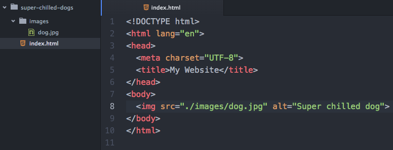
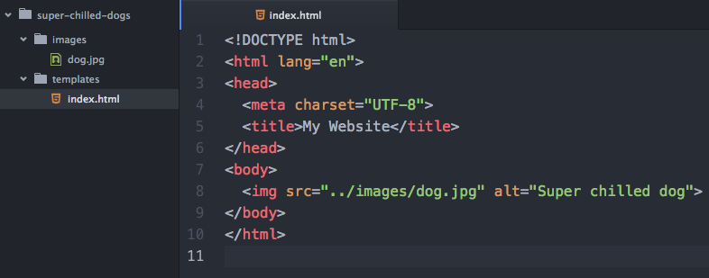
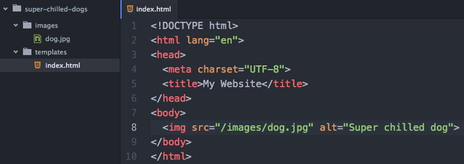

What did you learn last lesson?
Ways of writing CSS
There are four ways to style content on your website. These are:
- Using a style tag
- Using the style attribute
- Using JavaScript to style content
- Linking to an external stylesheet
Using a style tag

Using the style attribute

Using JavaScript to style content

Linking to an external stylesheet

Always link to an external stylesheet!
Where to link?
It is always best to link to your stylesheet(s) in the <head> tag.
This is so that the styles are loaded before the content is rendered.
File paths
There are two ways to link to a file. One is by using a 'relative' path and the other is using an 'absolute' path.
Anybody know the difference?
Relative path
Relative paths take into account the location of the file the code is written in. It then allows for a path to be outlined from the file where the declaration is made, to the file where the link is being made.
There is a specific syntax to use when writing relative paths:
- '.' denotes the current working directory
- '..' means to jump back one level to the parent directory
- '/' is used to show where a file/directory name begins and ends
Super chilled dogs

Same directory level

Inside directory at same level
Inside directory at parent level
Absolute path
An absolute path can either be a path that is absolute on the current drive/server or a full URL. Below is an example of an absolute path using the full URL to point to the image at a 3rd party site (not recommended).

Absolute path (cont.)
As mentioned before, the other type of absolute path is absolute according to the file structure on your current drive/server.
File paths
Task: have a 10 minute play around with file paths with the Super Chilled Dogs project.
Image asset file formats
Different file formats have different properties:
-
.pngSupports transparency and semi-transparency, great for logos, icons, and repeating background tiles. -
.jpegNo transparency, can be stored at different compression levels with varying amounts of "lossy-ness", typically the best format for photos. (Try to balance between photo quality and file size.) -
.gifCan have basic transparency and can cycle through a number of images, providing an animated asset.
File naming
It is useful to develop a consistent strategy for naming files. Here are some good guidelines to start implementing:
-
Never use spaces when naming a file.
-
Use either '-' or '_' to separate words. It doesn't matter which, but be consistent.
-
Use only lowercased letters.
What does CSS stand for?
CSS stands for Cascading Style Sheets. This means that styles are applied in a cascade, with styles declared lower down in the file taking precedence over earlier styles (all else being equal).
Syntax

Selectors
-
The element

-
An ID

-
A class

-
An attribute

-
A stateful pseudo-class

-
A positional/number based pseudo-class

The DOM
The Document Object Model (DOM) provides a virtual representation of your markup. Once the document (your page) is parsed by the browser, the DOM renders your code as a group of 'nodes'.

Chrome Dev Tools
These will become your go-to tool box as a frontend developer. Simply right-click on any element on a webpage and select 'Inspect'.
Let's have a look online!
Specificity
Determines how specific your selectors are.
As a rule of thumb, CSS code is easiest to manage when your selectors are specific enough to target the required element, but not so specific that there may be knock-on consequences for other, similar elements.
This is because more specific selector chains will override less specific ones.